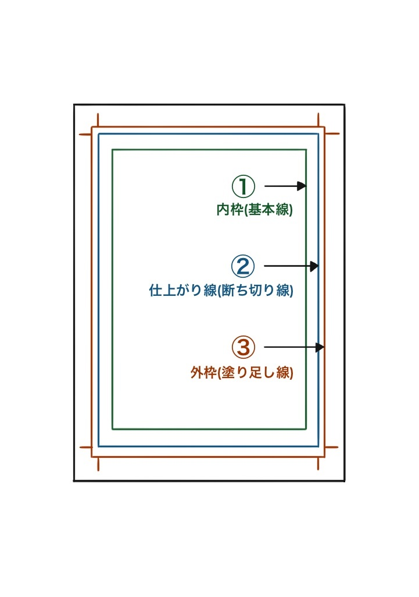

神戸大学漫画研究会の図書館
神戸大学漫画研究会の図書館
勉強会：第1回 原稿用紙の使い方
0.概要とはじめに
漫画やイラストを描く際に使う原稿用紙。アナログ原稿でもデジタル原稿でも避けては通れないものの、「使ったことはあるけど、よく分かっていない…」という方は多いのではないでしょうか？
神戸大学漫画研究会では年に数回部誌を発行しているために、部員になれば自然と原稿用紙に触れる機会も増えていきます。そこで、この勉強会では原稿用紙の使い方を紹介していきます！
1.枠線について
原稿用紙を使う際に気を付けなければいけないのが枠線です。
このように原稿用紙には３つの枠がああります。それぞれどのように使い分ければいいのでしょうか？
①内枠(基本線)
一番内側の線は内枠といって、漫画は基本的にこの範囲内に描きます。
この枠線の外側は、印刷するときに切れたりノド(*)側になって見えなくなってしまうかもしれません。強調したい絵や台詞の場合はみ出して描くこともありますが、大事な台詞や絵はここぶ収めましょう。
ノド(*)…製本時に閉じられる内側の部分。内枠の左右どちらかがノドになり、ここには見せたいものを描かない。
②仕上がり線(断ち切り線)
真ん中の線は仕上げ線と言い、基本的にここまでが印刷されます。ただし、断ち切りや印刷の際のズレで切れたりはみ出したりする可能性があります。
③外枠(塗り足し線)
一番外側の線は外枠と言います。②でも書いた通り、製本すると断ち切りや印刷の時にズレが生じることがあります。この線まで描き込んでおくことで、印刷された際に空白が生まれるのを防ぐことができます。
特にベタの塗り忘れは目立ってしまうので注意しましょう！
2.画材について
次に,原稿を描く際の画材についてご紹介します。
原稿は印刷・製本が前提なので、印刷に適していない画材を使うと掠れてしまうことがあるので気を付けなければいけません。
モノクロ印刷に向いている画材は
・墨汁
・製図用インク
・油性ペン
・ミリペン など…
逆に、モノクロ印刷に向いていない(掠れたり飛んだりしてしまう)画材は
・鉛筆
・ボールペン
・水性ペン（消しゴムをかけると薄くなる） など…
です。
モノクロ印刷では薄い色が印刷されにくいため、はっきりとした黒い色の出る画材を使いましょう！
3.まとめ
ここまで、原稿用紙の使い方について紹介してきました。
頑張って描いた漫画やイラストをきれいに本にするためにも、ぜひこの勉強会を参考にしてしてください！
（担当者:まるやま）